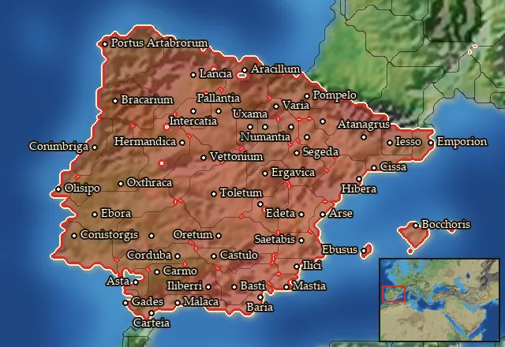

Mercenary Balearic Slingers


Mercenary. Hired from a regional pool, not recruited from a building.
Class: missile · Category: infantry · Men per unit: 40
Description
Balearic slingers were the finest slingers found in the western Mediterranean, renowned throughout the ancient world for their skill, range and accuracy with their simple but terrible weapons, and they were highly sought after mercenaries.
Stats
| Rank in roster | ||
|---|---|---|
| Men per unit | 40 | ███······· 30% |
| Attack | 8 | █········· 9% |
| Charge bonus | 8 | ███······· 31% |
| Defence | 16 | █········· 10% |
| · armour | 2 | █········· 13% |
| · defence skill | 14 | ██········ 18% |
| · shield | 0 | █········· 0% |
| Morale | 9 | ███······· 26% |
| Discipline | Normal | |
| Training | Untrained | |
| Upkeep per turn | 672 dn | ██████···· 60% |
Weapons
Its secondary attack is the stronger one: 9 against 8.
| Primary | Secondary | Primary | Secondary | Primary | Secondary | Primary | Secondary | ||||
|---|---|---|---|---|---|---|---|---|---|---|---|
| Attack | 8 | 9 | Charge bonus | 8 | 10 | Type | missile · archery | melee · blade | Damage | blunt | slashing |
| Projectile | lead_bullet | — | Range | 170 | — | Ammunition | 25 | — | Properties | Armour-piercing (counts only half the target's armour) | — |
Defence
| Primary | Secondary | Primary | Secondary | Primary | Secondary | Primary | Secondary | ||||
|---|---|---|---|---|---|---|---|---|---|---|---|
| Total | 16 | — | Armour | 2 | — | Defence skill | 14 | — | Shield | 0 | — |
Condition and terrain
| Hit points | 1 | Ground: scrub / sand / forest / snow | 0 / 0 / 0 / 0 | Charge distance | 30 | Formations | Square |
Technical stats
| Time between blows (primary / secondary) | 2.5 s / 2.5 s | Extra fatigue in hot climates | 0 | Collision mass per man (1.0 is normal) | 0.83 | Spacing between men: close / loose | 1.2 × 2.8 m / 2.16 × 5.04 m |
| Default ranks | 5 |
In battle: Can hide in long grass · Very good stamina
Where to hire it
Mercenaries are hired from a regional pool, not recruited from a building. This unit is offered by 2 pools covering 48 regions, at 3,410 dn to hire and 2 experience.
Mercenary pools: Emporion · Iberia

At least one of those pools sells to any faction that has an army in range, with no faction restriction.
The 48 regions where this unit appears in a mercenary pool
Agadir · Arevacia · Arevacia Septentrionalis · Artabria · Asturia · Ay-Bushum · Baliares Maiores · Bastetania · Bastetania Maritima · Bastetania Occidentalis · Bellia · Beronia · Bracarensia · Calpe · Cantabria · Carpetania · Celticia · Cessetania · Conia · Contestania · Contestania Meridionalis · Edetania · Emporitia · Ergavicia · Hasta · Helmantike · Ilercavonia · Ilergetia · Lacetania · Lusitania · Lusonia · Malaka · Mastienia · Olcadia · Oretania · Oretania Meridionalis · Saguntia · Sedetania · Suessetania · Tagia
…and 8 more.